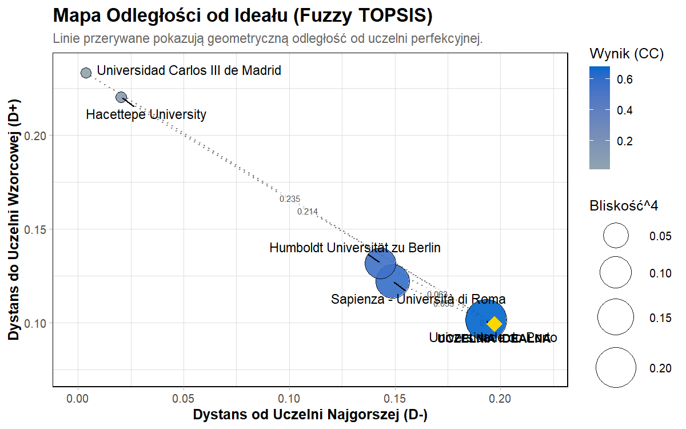
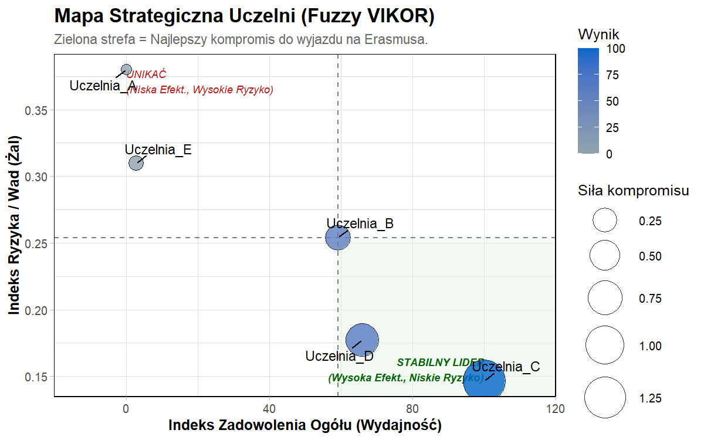
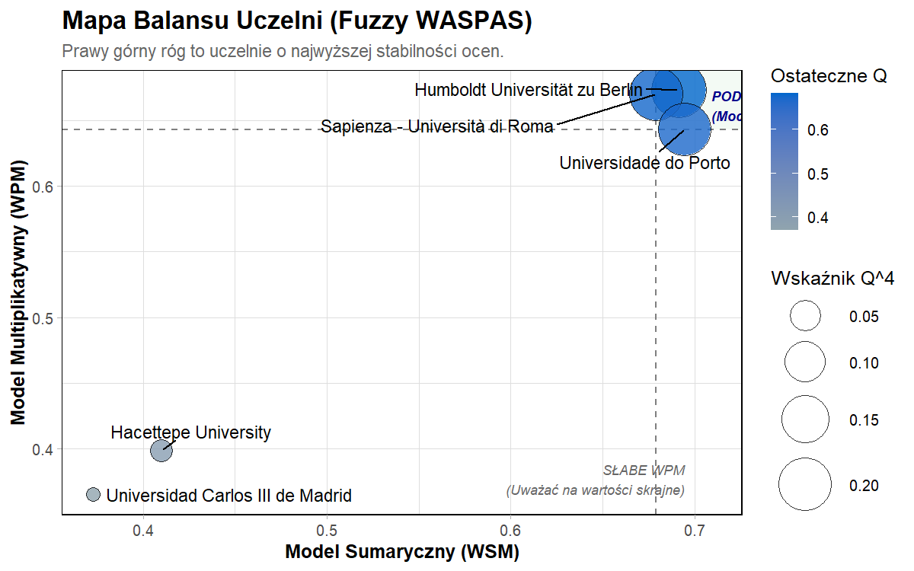

Prezentacja pakietu
ErasmusMobilityR
Narzędzie do wielokryterialnej analizy uczelni partnerskich Erasmus+. Pakiet prowadzi od danych ankietowych przez rozmywanie ocen, wagi BWM oraz rankingi Fuzzy TOPSIS, VIKOR i WASPAS do końcowego meta-rankingu.
Zakres
Finanse, jakość, zadowolenie i miasto jako główne kryteria wyboru.
Metody
BWM, Fuzzy TOPSIS, Fuzzy VIKOR, Fuzzy WASPAS i konsensus rankingów.
Wynik
Aktualny lider demonstracji: Uczelnia C.
Dane
Przykładowe dane wejściowe
Tabela jest generowana z aktualnego zbioru mcda_dane_surowe.
| Uczelnia | Stypendium | Biuro Erasmus | Społeczność | Miasto |
|---|---|---|---|---|
| Uczelnia_A | 444 | 3 | 8 | 4 |
| Uczelnia_A | 469 | 3 | 5 | 3 |
| Uczelnia_A | 517 | 3 | 7 | 4 |
| Uczelnia_B | 581 | 4 | 7 | 3 |
| Uczelnia_B | 533 | 4 | 7 | 5 |
Wagi
Priorytety BWM
Wagi kryteriów są liczone z tych samych wektorów preferencji, których używa poradnik.
Wyniki
Aktualny meta-ranking
Tabela poniżej jest generowana z obiektu meta_wynik$porownanie, więc aktualizuje się razem z README i vignette.
| Uczelnia | TOPSIS | VIKOR | WASPAS | Borda | Dominacja | Konsensus |
|---|---|---|---|---|---|---|
| Uczelnia_C | 1 | 1 | 1 | 1 | 1 | 1 |
| Uczelnia_D | 2 | 2 | 2 | 2 | 2 | 2 |
| Uczelnia_B | 3 | 3 | 3 | 3 | 3 | 3 |
| Uczelnia_E | 4 | 4 | 4 | 4 | 4 | 4 |
| Uczelnia_A | 5 | 5 | 5 | 5 | 5 | 5 |



Odtworzenie
Instalacja i pełny poradnik
install.packages("remotes")
remotes::install_github(
"nikolaw11/ErasmusMobilityR",
dependencies = TRUE,
build_vignettes = TRUE
)
browseVignettes("ErasmusMobilityR")
vignette("poradnik_mcda", package = "ErasmusMobilityR")